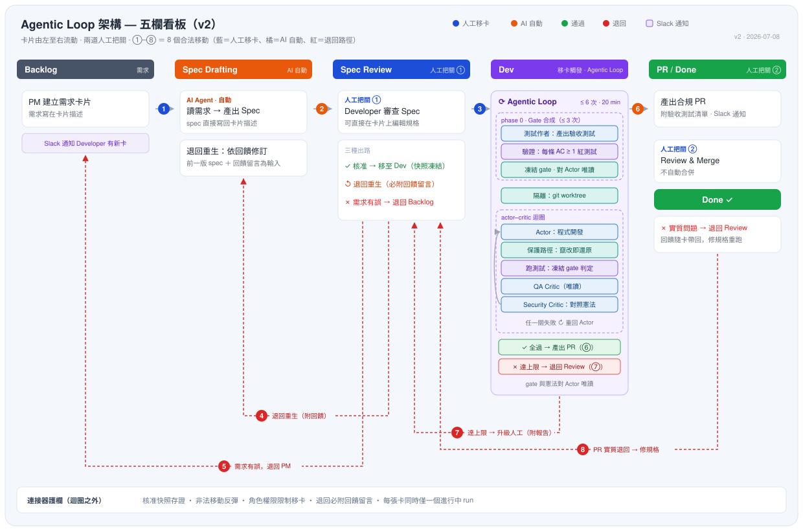

PM 在看板工具（Taiga／Jira／Azure Boards…）把需求卡片從「Backlog」拖進「Spec Drafting」，AI agent 立刻讀取卡片上的需求描述，把可測試的規格草稿寫回卡片；工程師在「Spec Review」直接於卡片上確認或修改規格，把卡片拖進「Dev」的那一刻就是核准——Agentic Loop 隨即接手：寫程式、跑測試、對照安全規則，最後產出一個已審查、合規的 PR，等候人工確認合併。
整個跨職能團隊——PM、工程師——都以最自然的看板動作驅動 AI 開發迴圈，不需手動啟動任何腳本。規格不對可以退回重生、需求不對可以退回 PM、迴圈失敗會自動升級人工——每一條路都在看板上。
reward hacking，鑽漏洞取巧），或在不知不覺中違反某條安全規則。我們的主張很簡單：價值不在模型多聰明，而在模型之外那一圈銀行可稽核的確定性控制碼——看板是唯一介面，連接器強制執行狀態機，AI 只在護欄裡奔跑。

看板五欄（Backlog → Spec Drafting → Spec Review → Dev → PR/Done）由左至右流動，①–⑧ 共 8 個合法移動：移卡即觸發、退回即回饋。規格審查有三種出路——核准（移卡當下快照凍結）、退回重生（必附回饋）、退回需求（交還 PM）；迴圈達上限的升級（⑦）與 PR 實質退回（⑧）也都回到規格這一關，確保「規格永遠是程式碼存在的理由」。
| 評分面向 | 本方案的對應證據 |
|---|---|
| 可行性 | 可運行原型＋離線測試套件；防 reward hacking（測試／憲法唯讀＋git diff 偵測還原）；迭代與時間上限；不自動合併。 |
| AI 工具應用 | Spec／Actor／QA／Security 多 agent 分工；確定性測試先把關、LLM 評審在後，避免模型自我認證。 |
| 業務價值 | 整段手動迭代自動化；規格即核准紀錄（快照存證，可稽核）；憲法一改、全隊生效。實測（2026-07-09 排練）：單一功能自 PM 拖卡至 PR 上板約 5 分鐘機器時間（AI 規格草擬 1 分 35 秒＋開發迴圈 3 分 13 秒）；需自我修正時約 5 分（2 次迭代收斂）；矛盾規格於 6 分鐘內安全升級、不出貨。 |
| 創新 | 看板即介面——移卡即觸發、退回即回饋，非工程師也能驅動；phase 0 自產驗收 Gate，先凍結靶再開發。 |